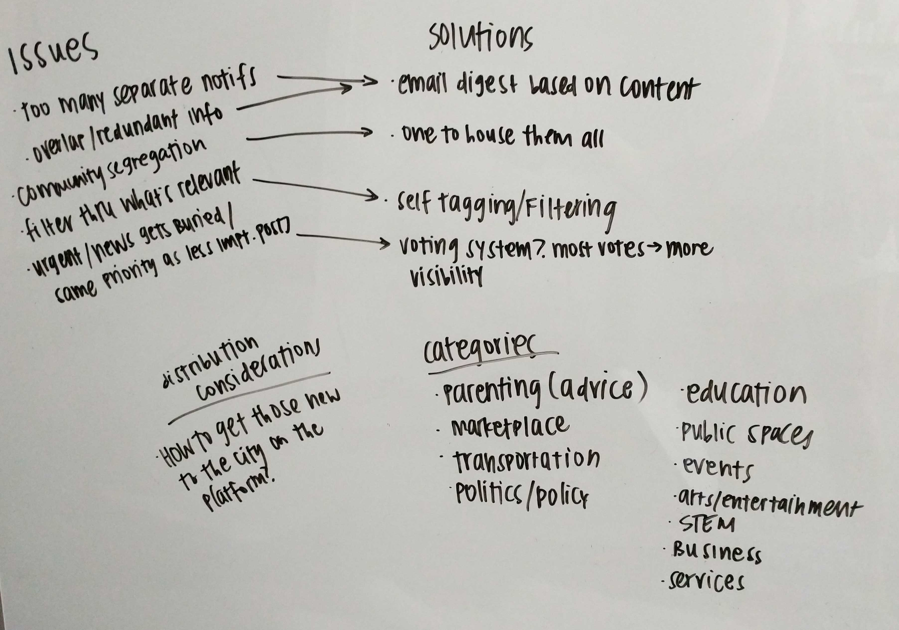
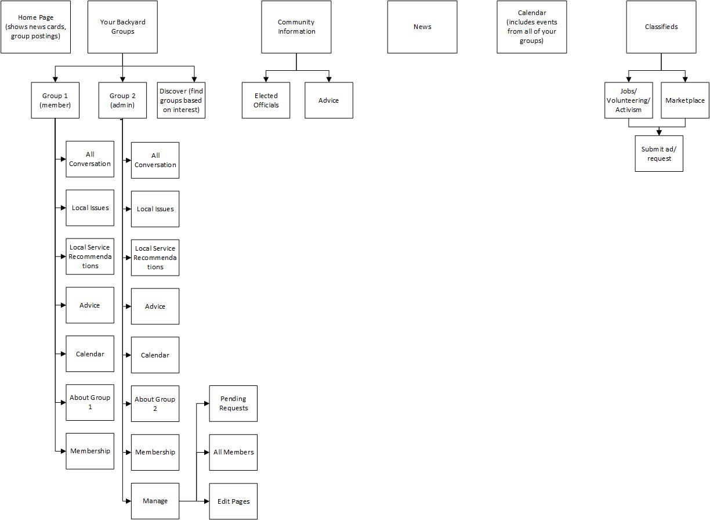
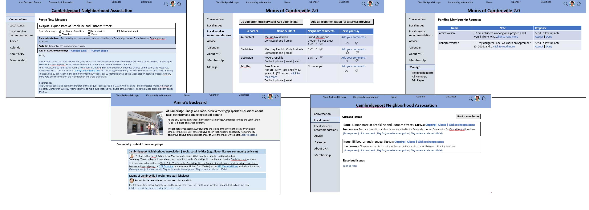

Overview
I worked with Backyard Media Company, an early stage startup, to build a new web-based product connecting local communities. The founders had identified that many of their neighbors lacked a sense of belonging to the city, despite loving their environment. Backyard Media sought to build an online community to bridge the gap between self and community, better informing and involving neighboring citizens.
I spent several weeks exploring the user research they'd completed, redefining their information architecture, and building wireframes for the online community prototype.
Objective:
Work with founder to understand user needs, build out a functional information architecture for the prototype, and create wireframes to hand off to developers.
Research
I was fortunate enough to join at a point when the Backyard Media team had already conducted a significant amount of user research, including user feedback and interviews, behavioral observation, and network mapping.
Patterns that had emerged from the research:
- People loved their community, but few felt like they "belonged"
- Local news was available but siloed
- Local news was hard to track and understand
- Community news lived in email lists, Facebook groups, and Nextdoor
- Most people heard about community groups through word of mouth
- The most close-knit groups often had the highest standards for new members, so the ability to police membership was important for maintaining group trust
- Information varied in relevance based on audience and longevity
- Existing distribution methods overwhelmed users with content
With these patterns and insights in mind, I considered the following "how might we" statements:
- How might we encourage community members to invest time and energy into being informed?
- How might we lower the barrier to entry to get community members engaged with their neighborhoods?
- How might we make it easier for community members to become better informed and involved with local politics?
- How might we support people to discover community groups?
- How might we enable community groups to self-moderate and reduce dramatic and polarized behaviors from their members?
- How might we distribute only the most relevant and timely information?
Ideation
I was asked to come up with ideas for a product solving these community issues.
I began by listing out all of the immediate issues revealed during user interviews, and some product solutions to address those issues. I also wrote down potential categories of interest, so users could appropriately tag their posts by the relevant category.

We considered options or features that may incentivize people to post relevant news - or post more, period. We also discussed the idea of credibility, whether it was in an individual sense or the group/community as a whole.
Sitemap
I was asked to take a look at wireframes designed by Amira and make modifications that I felt were appropriate. Even before wireframing, I wanted to be clear on how the information and features would be structured.
A solid vision of the site's information architecture would keep it consistent throughout the wireframes.
I went through each of the main pages on Amira's wireframes, noting the sections that should take priority in the hierarchy and the ones that would comfortably fit as a sub-category.
When developing the sitemap, I considered which sections and information would likely be accessed most frequently. I also thought about ways to make the information architecture intuitive enough for users to locate lesser-used sections when necessary.
I ended up moving "Elected Officials" from one of the top tabs to a sub-category under "Community Information". It was unlikely that users would frequently seek out information about their elected officials.

Wireframes
I liked the general flow of the wireframes, so I kept the foundation the same and made changes to reflect the sitemap I'd created.

I did switch the positions of the universal links so they'd sit above the community titles. Titles displayed are dependent on which link was selected.
I added the ability to post on individual pages (Local Issues, Local Service Recommendations, Advice) so users wouldn't have to go back to the Conversation page when they wanted to create a post.
I modified the "follow-up note" link under Pending Membership requests so that group administrators would be able to add a welcome message, rather than forcing the admin to pick one of three options. It also ensured that the "follow-up note" option wouldn't disappear after a certain member's acceptance/denial.
Reflection
Since the team had completed their user research, it allowed me to concentrate on "how" to approach the solution instead of "what" the problem was. I was ecstatic to see that they'd incorporated preliminary usability testing and card sorting into the user interviews.
Feedback from these activities provided so much guidance on how users perceived different layouts and features. I'm looking forward to trying this during my future user interview endeavors.
Developing the sitemap was pretty exciting, as the team had provided so many great ideas for product features. As I presented my ideas to the founder each week, I learned more about the community needs and continued to refine my work to better support those needs.
I handed the project off after building the wireframes, since I had just accepted a full-time role with another company.
I hope they will find my sitemap and wireframes useful in developing the final product. I'm excited to stay in touch with the Backyard Media team to see how they continue to develop and expand the community prototype.
Details
Context
Side project to support Backyard Media Company
Date
April 2018
Tools
Microsoft Visio, Microsoft PowerPoint
Role
Information Architect
Deliverables
Sketches, sitemap, medium-fidelity wireframes
Devices
Desktop computer
{kind=link}
{kind=link}
{kind=link}
{kind=link}